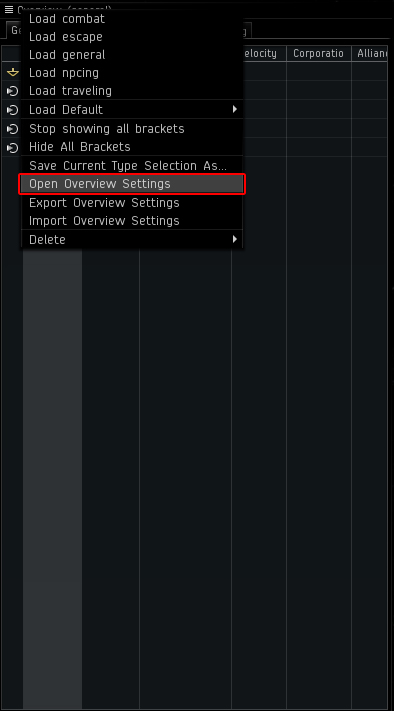
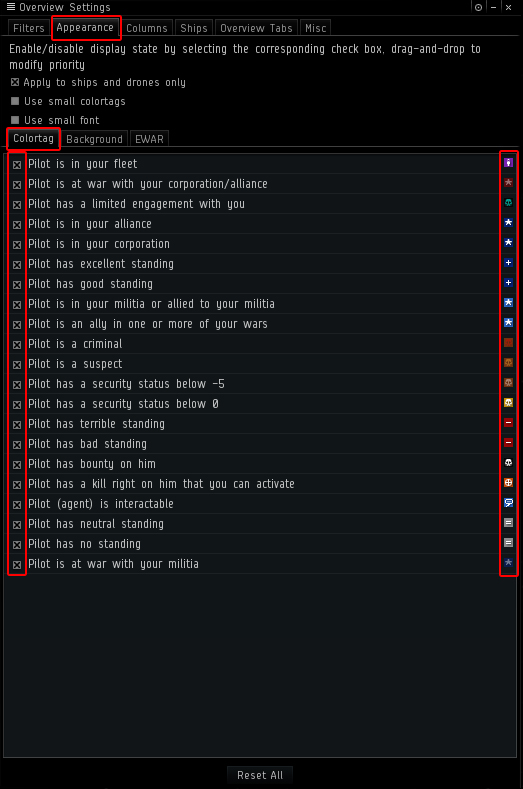
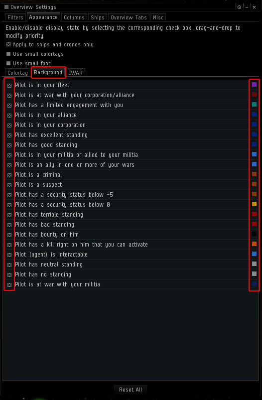
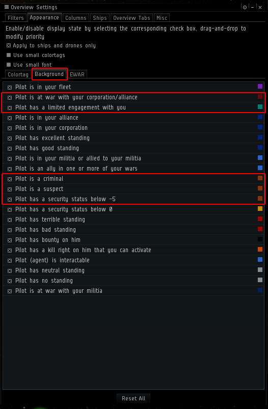

Hey everyone! The purpose of this revision is to streamline setting up your overviews to make it easier for you to keep track of what's going on whether you're flying solo or in a gang. Keep in mind this is a general guide on what overall tends to work well in all situations. Feel free to customize to your personal tastes.
Step One: Download Sarah's Overview Pack and The Default Overview.
Right click links and "save as" to C:\Users\YOURNAME\Documents\EVE\Overview.
Mac users: ~/Library/Application Support/EVE Online/p_drive/User/My Documents/EVE/
Step Two: Click on the Overview Icon.



Step Seven:
Click on the Appearance Tab and then click on the Colortag Tab.
Enable all tags for each status.
Choose the color for each tag/status.

Step Eight:
Click on the Background Tab.
Enable all tags for each status.
Choose the background color for each tag/status.

Step Nine:
Set the following Status/Tag(s) to Blinking. (Right click on each Status/Tag and select Toggle Blink.)

For more info see Sarah's Forum Post.